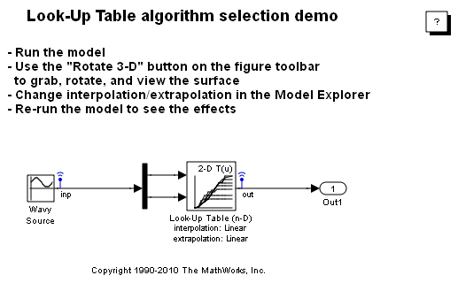
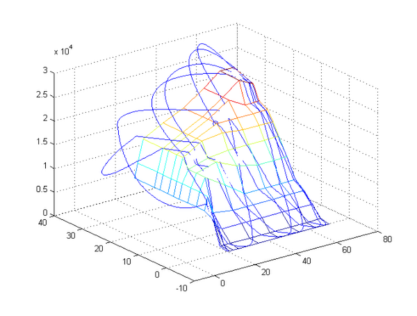

内挿アルゴリズムの選択と軌跡のアニメーション
このモデルでは、Lookup Table n-D ブロックで実行される 2 次元データ セットの内挿オプションと外挿オプションの変更結果を可視化するために、動的なコメット プロットを採用しています。精度、滑らかさ、データ サイズ、およびパフォーマンスのトレードオフを行うために、さまざまな状況でアルゴリズム オプションを採用することができます。
モデルを開き、Lookup Table ブロックのダイアログを使用して内挿と外挿を変更してみます。モデル エクスプローラーの右側のペインに組み込まれている、このダイアログのコピーが、最初のシミュレーションの後で表示されます。モデル エクスプローラーは、Simulink® 6.0 の新しいコンポーネントです。モデル全体とそのブロックの値をモデル エクスプローラーから入力し調整することができます。これには、コード生成とデータ管理のための、モデルのコンフィギュレーション パラメーター、Simulink ブロック、Stateflow® チャート、および Real-Time Workshop® の各設定が含まれます。
プロットを作成するために、Simulink 6.0 の非割り込みのログ機能を使用してシミュレーションからのデータがログが作成されます。非割り込みのログは、特定のブロック出力端子上の青色の小さい "送信機アンテナ" によってブロック線図でアニメーション化されます。これらのログ ポイントの設定は、MATLAB® コマンド ラインから set_param() を使用して行うことも、ツール メニューまたは信号プロパティ ダイアログから信号とスコープのマネージャーを使用して行うこともできます。
 